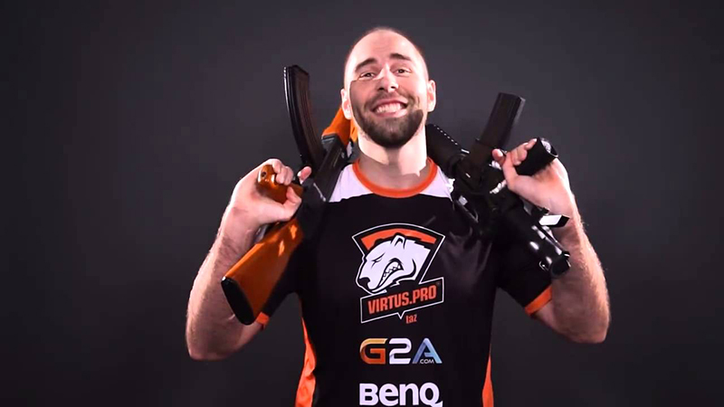

Wiktor "TaZ" Wojtas
Polski gracz e-sportowy w grach serii Counter-Strike. Karierę profesjonalnego gracza rozpoczął w 2004 roku w drużynie Pentagram. Od 25 stycznia 2014 do 2018 kapitan sekcji Counter-Strike’a: Global Offensive w drużynie Virtus.pro. Dnia 6 lutego 2018 przeszedł do rezerwy[3]. W marcu 2018 zawodnik przeszedł do drużyny Team Kinguin. W lutym 2019 został jednym z założycieli nowej organizacji e-sportowej – devils.one, jednak pod koniec kwietnia opuścił drużynę. W maju 2019 roku dołączył do drużyny Aristocracy (w późniejszym okresie drużyna zmieniła nazwę na Arcy). 14 stycznia 2020 zespół został rozwiązany. W maju tego samego roku dołączył do drużyny Honoris. W swojej karierze wygrał dotychczas indywidualnie ponad 734 tys. dolarów amerykańskich w ramach nagród za zajmowane w turniejach miejsca. Łącznie w karierze wygrał 58 oficjalnych turniejów, 31 razy był drugi i 44 razy kończył swój udział na półfinałach (stan na 27 czerwca 2018).